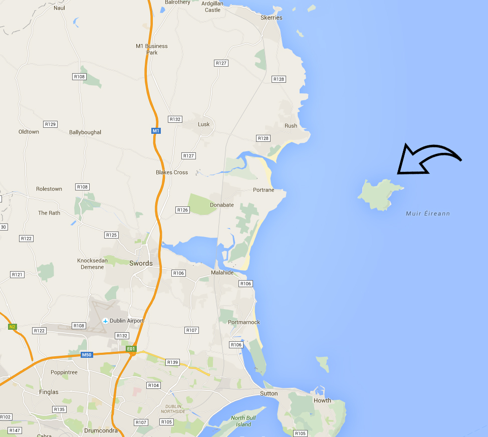

Physical description
Lambay Island is the largest island off the east coast of Ireland and is about 2.5 square kilometres (240 Hectares or 593.1 acres) in size. Its highest point rises to 127 metres (416.7 feet). There are steep cliffs on the northern, eastern, and southern sides of the island, with a more low-lying western shore. The geology is dominated by igneous rocks, with shales and limestones. There are a small number of wells and streams. There is a private port on the western shore, and there are a small number of buildings nearby.
Here is a link to Google maps to get the satellite view
Google maps